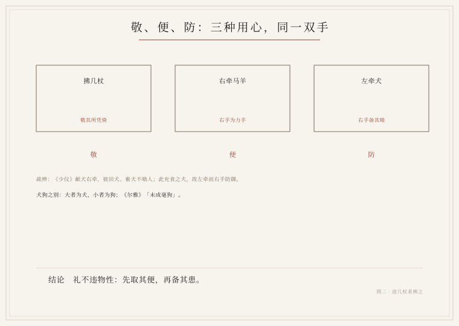

曲礼上 · 一·九十三 · 第 93 课
进几与杖，先拂去灰尘；献马献羊，右手牵；献犬，左手牵而右手备防。三事皆「手怎么用」。
说什么事：进几杖者拂之；效马效羊者右牵之；效犬者左牵之。
落在哪一层：仪。敬与防，各见于手。
为何编在此位：上节进兵，此节进几杖与牲。皆呈物之仪。
【经】進几杖者拂之。效馬效羊者右牽之，效犬者左牽之。
【注】尊者所馮依，拂去塵，敬。用右手便。效猶呈見。犬齜齧人，右手當禁備之。
几杖 注「尊者所冯依」。几可凭，杖可倚，皆老者所恃。
拂之 拂去尘埃。疏「为当冯执故也」。
效 注「效犹呈见」；疏「效，呈见也」。呈献。
右牵 疏「马羊多力，人右手亦有力，故用右手牵掣之也」。右手为力手。
左牵 注「犬龇啮人，右手当禁备之」。左手牵，右手空出以备。
与《少仪》之异 疏「《少仪》云献犬则右牵之者，彼是田犬、畜犬，不啮人，不须防；今此是充食之犬，故防御之也」。
犬狗之别 疏「大者为犬，小者为狗」；《尔雅》「未成毫狗」。
进献几与杖，先拂去灰尘；呈献马、羊，用右手牵；呈献犬，用左手牵。
一节三事，都在手上。拂几杖是敬其所倚，右手牵马羊是顺其力，左手牵犬是留一手防其啮。敬、便、防，三种用心，都落在同一双手上。
第一层 拂尘为敬 几杖是尊者所凭所倚，尘在其上，则尊者凭之沾衣。拂一下，是把尊者的日用先顾到。
第二层 右手为力 马羊多力，以力手牵之。礼不违物性，先取其便。
第三层 左手牵犬 右手留空，是备其啮。防患于未然，礼有极务实的一面。
第四层 田犬与食犬 疏辨《少仪》右牵与此左牵之异：不啮人之犬不必防，充食之犬则防。同一犬，用处不同，牵法不同。
与今日何干 递拐杖先擦净，牵狗用不灵活的那只手、把有力的一只手留出来。此节之心，凡养狗者皆懂。
| 左 | 右 |
|---|---|
| 进几杖拂之 | 尊者所凭倚，先拂其尘 |
| 效马效羊右牵 | 多力，用右手便 |
| 效犬左牵 | 犬啮人，右手备防 |
| 田犬与食犬 | 田犬不啮，右牵；食犬须防，左牵 |
| 犬狗之别 | 大者为犬，小者为狗 |
| 效 | 呈见，非效法 |
画一案三物：左为一几与一杖并置、几面有擦拭的浅痕、杖身一端包布；中为一段缰绳绕成圈（示马羊）；右为一条犬绳，绳端向左、另有一根备用的短绳在右侧。不画人、不画犬形、不写文字。赭色只在几的边棱。
